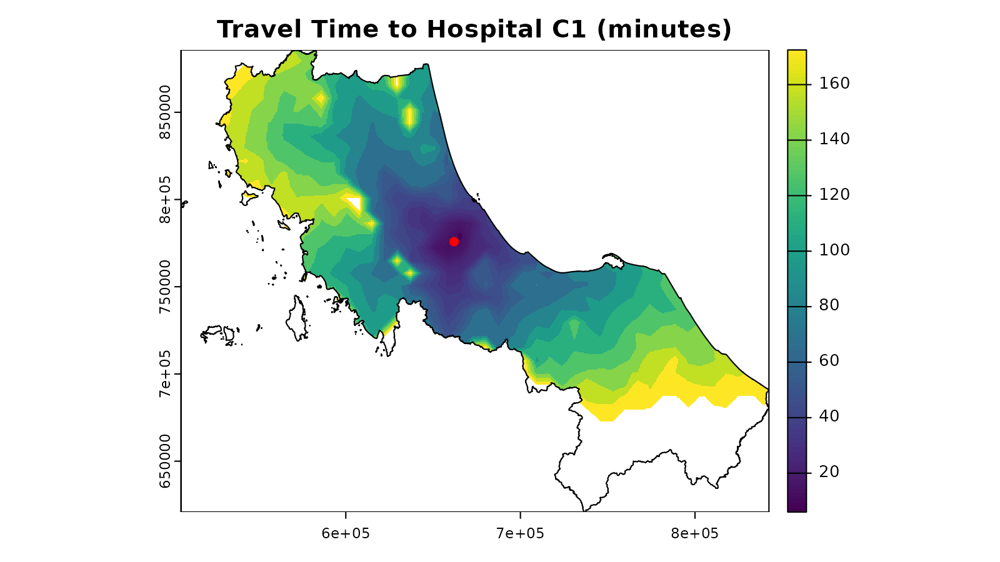

1. Getting Started with spax: A Healthcare Accessibility Case Study
Source:vignettes/spax-101-intro.Rmd
spax-101-intro.RmdGetting Started with spax
Ever wondered how to measure whether people can actually reach the
services they need? That’s where spatial accessibility analysis comes
in. While there are many ways to approach this challenge, the
spax package offers a fresh perspective with its
raster-based tools.
What Makes spax Different?
Most accessibility tools work with points and distance matrices -
think dots on a map connected by lines. spax takes a
different approach:
Raster-First: At the expense of memory (lol),
spaxBuilt around continuous surfaces rather than discrete points, making it perfect for working with high-resolution population data or complex service areasModular Design: Chain together functions to build custom workflows - like LEGO bricks for spatial analysis
Performance-Focused: Optimized for large spatial datasets, because sometimes you need to analyze an entire region
Uncertainty-Aware: Because the real world isn’t deterministic,
spaxincludes tools for Monte Carlo simulation and sensitivity analysis
The Building Blocks
Every spatial accessibility analysis needs three key ingredients:
Demand refers to the size and location of the population requiring services. It can be represented as a population density map or as aggregated values at administrative unit centroids (e.g., the number of elderly residents in each neighborhood).
Supply represents the capacity and location of service providers. This could be the number of doctors at each hospital, the number of seats available in schools, or even the stock of happy-hour cocktails at your favorite bar üç∏.
Distance: connects the dots between demand and supply. It defines the effort needed to bridge the two, whether through travel time or physical separation. Distances can be stored in matrices, calculated from coordinates, or derived from travel-time rasters, offering insights into the accessibility of supply to those in need.
Let’s see how these look in practice using our example dataset from Thailand’s Health Region 12.
Working with Example Data
üìù Data Note: The example dataset comes from Thailand‚Äôs Health Region 12, combining hospital records, Meta‚Äôs population density maps, and OSRM-computed travel times.
The package includes several integrated datasets (already lazy-loaded) that showcase healthcare accessibility analysis in action. Let’s load the required packages first:
library(spax) # For accessibility analysis
library(terra) # For raster operations
library(raster)
library(sf) # For vector data handling
library(tidyverse) # For data manipulation + plotting
#> Error in get(paste0(generic, ".", class), envir = get_method_env()) :
#> object 'type_sum.accel' not found1. Understanding Demand
Our example uses under-5 population density data aggregated from Meta’s High Resolution Population Density Maps:
# Load the population density data
pop <- rast(u5pd) # Convert from raster to terra::SpatRaster
# Quick view of the data
print(pop)
#> class : SpatRaster
#> dimensions : 509, 647, 1 (nrow, ncol, nlyr)
#> resolution : 520.4038, 520.4038 (x, y)
#> extent : 505646.5, 842347.8, 620843.7, 885729.2 (xmin, xmax, ymin, ymax)
#> coord. ref. : +proj=utm +zone=47 +datum=WGS84 +units=m +no_defs
#> source(s) : memory
#> name : tha_children_under_five_2020
#> min value : 0.00000
#> max value : 83.07421
res(pop) # each cell is ~520m x 520m
#> [1] 520.4038 520.4038Let’s visualize this with our region boundary:
# Plot population density
plot(pop, main = "Under-5 Population Density")
plot(vect(bound0), add = TRUE) # Add region boundaryThis raster shows us where children under 5 years old are located across the region, with brighter colors indicating higher density areas.
2. Exploring Supply
For healthcare supply, we have detailed information about hospitals
(hc12_hos)
# Look at hospital data
head(hc12_hos)
#> Simple feature collection with 6 features and 10 fields
#> Geometry type: POINT
#> Dimension: XY
#> Bounding box: xmin: 659422 ymin: 744135 xmax: 715990.7 ymax: 824148
#> Projected CRS: WGS 84 / UTM zone 47N
#> # A tibble: 6 × 11
#> id hoslvl bed s_doc s_dent s_nurse s_hv d_pop_moph d_pop_moph_60
#> <chr> <fct> <dbl> <int> <int> <int> <int> <dbl> <dbl>
#> 1 c172 3-Regional 591 522 44 973 0 0 0
#> 2 c173 2-General 508 321 18 706 0 0 0
#> 3 c174 2-General 30 67 6 63 0 0 0
#> 4 c175 2-General 60 81 9 103 0 0 0
#> 5 c176 2-General 90 175 12 180 0 0 0
#> 6 c177 2-General 60 77 9 103 0 0 0
#> # ℹ 2 more variables: d_pop_moph_05 <dbl>, geometry <POINT [m]>
# Visualize hospital distribution and capacity
ggplot() +
geom_sf(data = bound0, fill = "grey95", color = "grey70") +
geom_sf(data = hc12_hos, aes(color = hoslvl, size = s_doc)) +
scale_size_continuous(name = "Number of Doctors") +
scale_color_viridis_d(name = "Hospital Level") +
theme_minimal() +
labs(
title = "Hospital Distribution in Region 12",
subtitle = "Size indicates number of doctors"
)3. Distance and Travel Time
The package includes pre-computed travel time data showing how long it takes to reach each facility:
# Load the travel time data
(distance_raster <- rast(hos_iscr)) # Convert to terra::SpatRaster
#> class : SpatRaster
#> dimensions : 509, 647, 77 (nrow, ncol, nlyr)
#> resolution : 520.4038, 520.4038 (x, y)
#> extent : 505646.5, 842347.8, 620843.7, 885729.2 (xmin, xmax, ymin, ymax)
#> coord. ref. : +proj=utm +zone=47 +datum=WGS84 +units=m +no_defs
#> source(s) : memory
#> names : c172, c173, c174, c175, c176, c177, ...
#> min values : 6.0, 3.0, 3.5, 4.0, 4.0, 11.0, ...
#> max values : 172.5, 172.5, 172.5, 172.5, 172.5, 172.5, ...
# Each layer represents travel time to a different facility
# Look at travel time to one facility
plot(distance_raster[[1]],
main = "Travel Time to Hospital C1 (minutes)"
)
plot(vect(bound0), add = TRUE)
plot(hc12_hos[1, ], add = TRUE, pch = 16, col = "red")
#> Warning in plot.sf(hc12_hos[1, ], add = TRUE, pch = 16, col = "red"): ignoring
#> all but the first attribute
Quick Start: Basic Accessibility Analysis
Now that we understand our data, let’s put it all together for a basic accessibility analysis. We’ll use the Enhanced Two-Step Floating Catchment Area (E2SFCA) method to analyze access to doctors:
# Calculate accessibility scores
accessibility <- spax_e2sfca(
demand = pop, # Population density
supply = hc12_hos |> st_drop_geometry(), # Hospital capacity
distance = distance_raster, # Travel times
decay_params = list( # How access decays with distance
method = "gaussian",
sigma = 30 # 30-minute characteristic distance
),
demand_normalize = "standard", # Prevent demand inflation
id_col = "id",
supply_cols = c("s_doc", "s_nurse") # Analyze doctors and nurses
)
# Visualize the results
plot(accessibility,
main = c("Access to Doctors", "Access to Nurses")
)
plot(vect(bound0), add = TRUE)And that’s it! We’ve calculated accessibility scores for doctors and nurses across the region with the lighter colors indicating better access.